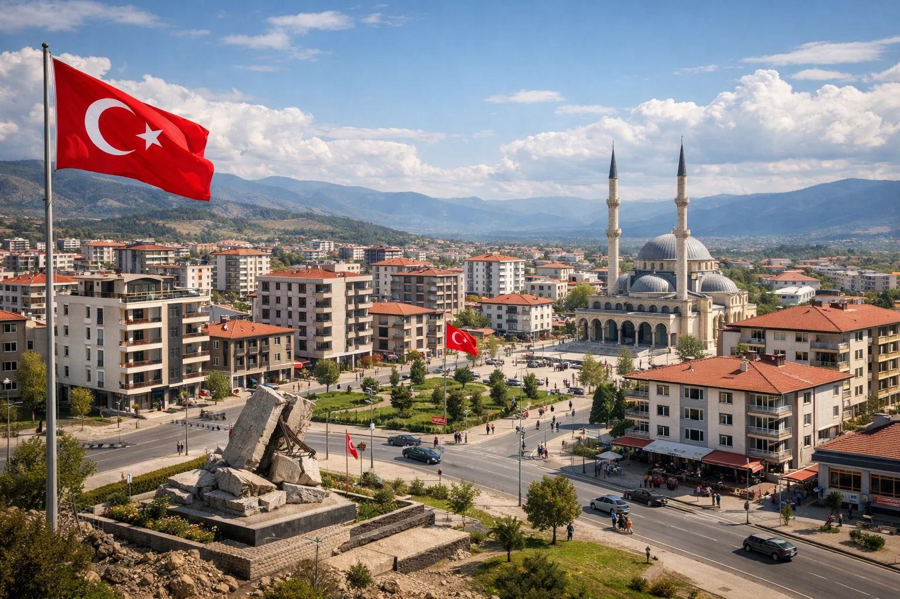

Kahramanmaraş 6 Şubat Depremleri – Dersler ve Sonuçlar
6 Şubat 2023 sabah 04:17'de yaşanan Mw 7.8 Pazarcık depremi ve 13:24'te Mw 7.6 Elbistan depremi, Türkiye tarihinin en yıkıcı afetiydi. 11 il, 50 binden fazla can kaybı. 3 yıl sonra nereye geldik?
Ne Oldu?
Doğu Anadolu Fay Hattı'nın Doğanşehir, Pazarcık ve Elbistan segmentleri kırıldı. İlk deprem Pazarcık'ta Mw 7.8, 9 saat sonra Elbistan'da Mw 7.6 — iki ayrı ana deprem. Toplam enerji 1939 Erzincan ve 1999 Gölcük'ü geride bıraktı. 11 il etkilendi: Kahramanmaraş, Hatay, Gaziantep, Adıyaman, Malatya, Osmaniye, Diyarbakır, Elazığ, Şanlıurfa, Adana, Kilis.
Kayıplar ve Hasar
50.000+ vefat, 107.000 yaralı, 3 milyon kişi evsiz. 520.000 bina hasar raporlandı, 170.000'i tamamen çöktü. Hatay, Antakya'da tarihi yapıların çoğu yok oldu. Ekonomik hasar 3.5 trilyon TL tahmini (GDP'nin %10'u).
Neden Bu Kadar Büyük?
1. Ana depremler Mw 7.8 + Mw 7.6 — çok büyük enerji. 2. Sarsıntı süresi 45+ saniye. 3. Sabahın 04:17'sinde olması (herkes uyurken). 4. Yapı kalitesi zayıflığı — 2018 öncesi yönetmelik ile yapılan binaların çoğu çöktü. 5. Beton kalite denetim zafiyeti — sonraki soruşturmalarda müteahhit-denetim firması bağlantıları çıktı.
Hatay'da Olağandışı Yıkım
Antakya merkezi %80 yıkıldı. Sebep: Amik Havzası alüvyon zemini — sarsıntıyı 3-4 kat güçlendirdi. Ayrıca tarihi merkezde 1950-70 yapımı yığma binalar yoğundu — deprem yönetmeliği yoktu o dönemde.
Yapılan Değişiklikler
2023 sonrası: 1. Yapı denetim firmalarına ağır denetim ve yaptırım. 2. Müteahhitler için zorunlu sorumluluk sigortası (SSK). 3. "Dirençli Kent" programı — 11 ilde 500 milyar TL yeniden yapım. 4. Beton kalite kontrol standartları sıkılaştırıldı. 5. Kentsel dönüşüm hızlandırıldı — DAF boyunca tüm iller. 6. DASK azami teminat 640.000 TL'ye çıkarıldı (önceki 320.000).
Ne Öğrendik?
1. DAF şaka değil — İstanbul depreminden önce bile büyük risk. 2. Yapı denetim güvenilirliği tüm ülke için kritik. 3. Kolektif psikolojik destek organizasyonu geliştirildi (AFAD Psikososyal Destek). 4. Arama kurtarma AKUT+ekipleri genişletildi. 5. Mobil hastaneler ve sahra hastaneleri hazırlığı yasal zorunluluk. 6. 72 saat kuralı daha çok vurgulandı.